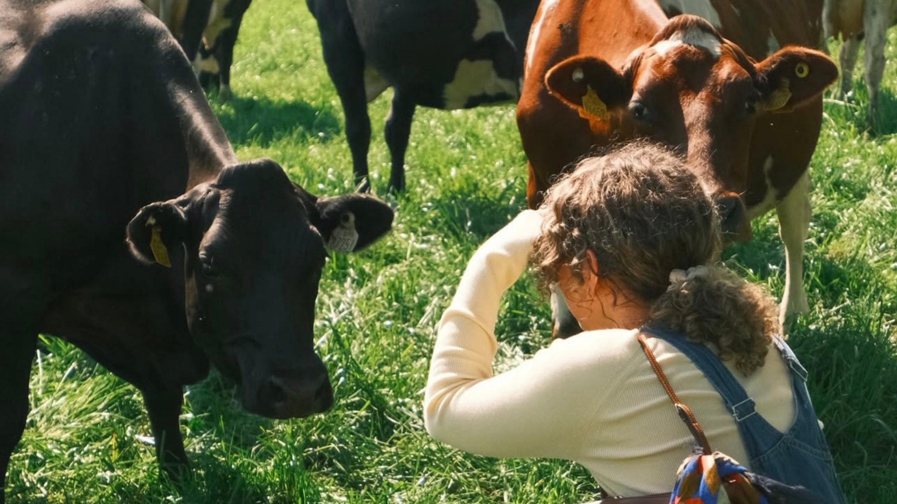

Kerrygold — The Butter Brand Trip
All selected work
KerrygoldThe Butter Brand TripImage Credit: Cherry Bombe
Nobody expects a butter brand to have an influencer brand trip. That's exactly why it worked.
Influencer brand trips had started to feel risky by the time we ran this one. Get it wrong and a brand trip can read as an out of touch flex. So the brand doing it had to matter, and Kerrygold, an actual dairy brand with actual farms, actual cows grazing in emerald fields and actual farmers, had a story most beauty or fashion brand trips simply can't tell.
We brought creators from across Ireland, the UK, the US and South Africa to the Ballymaloe Festival of Food weekend, where Kerrygold was a headline sponsor, and out to the actual Kerrygold farms themselves, to meet the people and the cows behind the butter. No rigid content requirements, no forced brand mentions, just genuinely good food, real farmers with real stories, and a country that, for once, cooperated with the weather.
It worked because nobody expects a butter brand to send influencers on a trip like this. That novelty is what got the first video to stop people mid-scroll, and once one video landed, it pulled a wave of others behind it: nail artists, cookbook accounts, home cooks, all making their own version of “wait, Kerrygold did what?” content. It reached 7.7 million people in 2025, nearly tripling the reach of the previous trip, and sparked 92 separate reaction videos worth another 3.4 million views on their own.
- Role
- Activations, PR, Brand & Creator Partnerships
- Brand
- Kerrygold
- Category
- FMCG / Food & Beverage
- Location
- Ireland (and UK, US, South Africa)
- Year
- 2024–2025
This wasn't only an American story either - Irish creators including The Hungry Hooker, Irah Mari, James Kavanagh, William Murray and Sian Conway came down for the festival too, cooking demos, dinners, farm tours, and while the journey was a lot shorter for them compared to our international creators, the reaction from their audiences in the home market was every bit as strong - showcasing the power of a genuinely great brand trip.
Sometimes the best proof a brand has real substance is what happens when you stop trying to sell it, and just show people where it comes from.
Organic reach across creator content
Reaction videos sparked by the trip, unprompted
Additional views generated by those reaction videos alone
Featured in
- ADWeek“Why Kerrygold's Butter-Themed Influencer Trip Went Viral on TikTok”
- Cherry Bombe“Butter Me Up,” by Kerry Diamond
- The Irish Times“Kerrygold's masterclass in modern marketing”
The FOMO was real - everyone on the internet wanted an invite.
Creators who weren't invited on the trip started making content about it anyway, half joking, half genuinely trying to get themselves an invite for the next one. From internet celebrities including Dylan Mulvaney to nail artists and comedians - the brand trip broke out of the foodie niche on socials and into the mainstream. Here's a selection of my favourites.